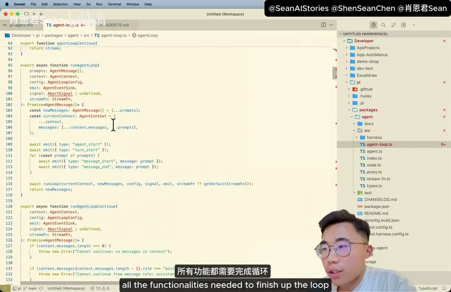

原视频 · 在线回看
点击后联网加载 B 站播放器；本地不下载整段视频。

原视频 · 在线回看
点击后联网加载 B 站播放器；本地不下载整段视频。
来源：一口气学会Pi Agent极简Harness系统设计
UP 主：肖恩君Sean · 22 分 30 秒 · 深度阅读
链接：https://www.bilibili.com/video/BV1aW3V6WEsT/
我们想要一个脚本：输入宝可梦的名字，就能查到它的基本资料。可以直接请编码助手完成，也可以先把需求交给一个更大的个人助手，由它把写代码的部分委派出去。这个例子采用了后一种方式：外层系统接收请求，建立一个编码子任务，再调用 Pi Agent；Pi 完成具体编码工作，把结果交回外层系统。
这个小例子值得先停下来理解。用户看到的是一个助手在解决问题，系统内部却可以把编码能力当成独立部件使用。外层负责接收任务和安排工作，Pi 负责在指定环境中读代码、改文件、运行命令。只要调用和返回的方式清楚，外层不必重新实现一套编码循环。我们接下来关心的，就是 Pi 怎样把这块部件做得足够小，同时给使用者留下扩展空间。
一个编码 Agent 通常需要反复做几件事：接收任务，准备模型要看的上下文，请模型判断下一步，执行工具，再把工具结果交回模型。模型可能先读文件，再修改代码，接着运行检查，直到能够回复用户。这一套围绕模型的执行设施，就是这里讨论的 Harness。它决定任务怎样运行，模型则在这个环境里选择具体行动。
Pi 的设计倾向，是保持这个核心循环清楚，把许多可选能力留给扩展。录制时重点讨论的基础形态，没有预先把子 Agent、计划模式、待办事项和一整套外部工具连接方式都固定在核心里。这样的选择让使用者容易看清默认行为，也意味着需要某些高级工作方式时，要自行组合或安装相应能力。极简带来的是明确的取舍，无法仅凭内置功能少，就认定它更适合每一种任务。
前面例子里的子 Agent 由外层系统建立，Pi 在其中承担编码工作。这个区别解释了一个表面矛盾：Pi 的基础设计可以不内置子 Agent 编排，整个应用仍然可以使用子 Agent。编排发生在外层，编码执行发生在 Pi，两个部件各自负责一部分。理解责任放在哪里，比只看界面上是否出现“子代理”几个字更有用。
如果由人直接使用，终端里的交互界面很方便。输入问题，看到回复，继续追问，就像在终端里进行一段连续对话。这个界面通常叫 TUI，也就是终端用户界面。启动 Pi 并配置模型连接后，可以先输入一个简单问候，确认基本交互能正常工作。模型连接是运行准备，任务逻辑仍然交给之后的对话。
如果由另一个程序调用，持续打开交互界面就不一定合适。程序可能只想提交一个问题，等拿到结果后继续自己的下一步。单次输出模式满足这种需要：发出任务，得到结果，返回调用者。开头的外层助手调用编码能力，就可以通过这样的程序入口完成，不需要模仿人在终端里反复敲键盘。
还有些应用希望在任务进行时持续看到状态。这时可以采用结构化事件输出，把开始、消息变化、工具相关事件和结束等可见信息交给调用程序。外层界面据此显示进度，或者保存运行记录。事件流描述的是系统公开出来的执行信息，不能据此认定得到了模型全部内部推理。对于应用开发，更重要的是有哪些稳定、可处理的事件，能够帮助程序知道当前处于哪一步。
RPC 则为持续控制提供另一种接口。可以先把它理解为，一个程序通过约定的消息格式向 Pi 发命令、接收事件。我们不需要在这里展开通信细节，只要看见这几种入口服务于不同使用者：人需要方便对话，脚本需要明确返回，应用需要持续观察或控制。核心编码能力可以保持相同，接入方式根据外层需求选择。Pi 的项目说明也将交互、单次输出、JSON、RPC 和程序集成分别列为使用方式。
| 入口 | 主要使用者 | 最关心什么 |
|---|---|---|
| 终端交互 | 直接操作的人 | 连续提问、查看结果、调整任务 |
| 单次调用 | 脚本或外层助手 | 提交一次任务并拿到返回结果 |
| 结构化事件流 | 需要观察过程的程序 | 接收可解析的执行事件 |
| RPC | 需要持续控制的应用 | 按协议发送命令并处理反馈 |
有了这些入口，Pi 就能够同时作为一个独立工具，以及更大系统里的一个部件。前面的宝可梦脚本需求没有要求外层助手懂得怎样编辑每个文件，外层只需要把任务交给编码部件，等待并处理它的结果。
用户刚输入的一句话，通常不足以说明整个项目怎样工作。编码助手还需要知道项目约定、可用工具，以及此前已经做过的事情。因此，在请求模型之前，系统要准备上下文，把当前任务和相关说明放在一起。上下文可以理解为模型这一次判断时能够看到的材料；没有放进去的内容，不能假定模型自动知道。
AGENTS.md 是项目约定的一种承载方式。打开相应仓库的这个文件，可以看到沟通风格、代码质量、运行命令、依赖处理和协作方式等说明。例如，要求回答减少无关客套，与要求怎样进行代码检查，都是希望编码助手遵守的工作习惯。这里需要分清，仓库文件描述的是相应项目的规则，不能把其中所有要求都理解成 Pi 对所有用户硬编码的统一行为。
系统提示则介绍助手的基本角色和工具等内容。项目约定、系统提示、当前用户任务和会话记录共同构成模型判断的基础。它们各自回答不同问题：助手是什么角色，当前项目怎样工作，现在要完成什么，已经发生了什么。把这些信息准备清楚，可以减少模型在任务开始时猜测规则和状态的负担。
这也说明了为什么上下文管理重要。把大量说明塞进去，只有在模型需要它们时才有帮助。如果当前任务只是在一个本地项目里改代码，许多与任务无关的外部服务说明可能占据空间，却没有提供实际价值。极简设计希望让使用者控制这些信息什么时候进入模型视野，避免默认就把所有潜在能力的细节一起带上。
我们先看四种核心工具：read 读取内容，write 写入文件，edit 修改已有内容，bash 执行命令。对编码工作来说，这几类动作覆盖了很多基本需要。模型可以先读现有实现，再写入或编辑代码，通过命令运行项目原本的检查，最后根据结果决定继续修改还是报告完成。
工具很少，并不意味着能做的事情很少。尤其是 bash，它可以调用环境中已经存在的程序，因此相当于给模型一个广泛的操作入口。接口数量和实际权限是两个不同维度：只有四个工具的助手，仍可能拥有很大的影响范围。缺少内置审批弹窗时，外层系统和运行环境更需要明确目录、网络、凭据与执行权限，不能把界面简洁误解为自然安全。
一次循环可以这样理解：模型读到上下文后，可能直接回答，也可能提出工具调用；执行层处理调用，把结果或错误放回上下文；模型再根据更新后的信息判断任务是否完成。如果工具失败，失败结果也应成为下一次判断的依据。模型可能换一种方法，也可能需要告诉用户缺少条件。让模型看见真实执行结果，是它继续工作的重要前提。
循环的价值就在于，任务无需在第一次模型回答中全部完成。写代码之前可能需要读文件，运行检查之后可能发现错误，修复后还要再验证。模型每次看到新信息，再决定下一步。源码里的函数组织把这些步骤接起来，但循环本身不会保证判断正确；停止条件、错误处理和外层约束仍然会影响最终结果。
宝可梦查询中有一次迟迟没有返回，随后便停止了等待。这个细节提醒我们，拥有循环，并不意味着运行一定顺畅。工具卡住、请求变慢或条件不满足时，需要能中断、收到错误或返回控制权。否则一个简单问题也可能停留在等待状态，无法继续推进。
连续对话通常被想成一条线：用户问一句，助手答一句，再继续问。Pi 的会话可以在过去某条消息处分叉，形成树状关系。这样我们可以保留共同的前半段讨论，再沿不同方向继续，不必把一个方向试到一半后完全丢弃。
宝可梦问答里，先问一种黄色宝可梦，再询问它的属性，形成了一段连续上下文。之后可以回到之前的位置，改变条件继续问。分叉后的对话沿用所选择位置之前的信息，后续问题则形成新的路径。对于编码讨论，同样可以在决定方案之前保留共同背景，再比较两种不同的修改思路。
不过，对话树与文件版本管理需要分别理解。回到某条旧消息，改变的是接下来使用的会话历史；它不自动意味着磁盘上的文件也恢复到当时的内容。如果之前某一分支已经修改了工作区，新的分支仍可能面对修改后的文件。实际进行代码试验时，需要另外理解工作区的状态保存与恢复方式，不能把对话分叉当成所有副作用都已经撤销。
会话记录本身也与项目源码不同。源码仓库是工具的实现，会话则属于使用者实际工作的数据，可能包含提问、文件内容和执行信息。两者没有必要混在同一个公开仓库里。查看会话可以帮助理解任务经过了什么，但分享记录之前仍要检查其中是否带有不适合公开的内容。
四种工具足够执行很多动作，却没有预先定义所有领域的工作方式。模型要查宝可梦资料时，应该到哪里找，返回哪些字段，遇到不同名字怎样处理，这些需要更具体的说明。Skill 可以把一类任务的操作知识保存下来，供助手在相关情境下读取。
这里的 pokedex 技能围绕宝可梦资料查询，说明要获得的内容，包括属性、基础数值和特性等。用户要求使用这个技能后，Pi 读取说明，调用相关脚本或工具，返回查询结果。这个过程里，技能告诉助手该怎样组织工作，实际的数据获取仍然由程序执行。说明文件因此更像一张可复用的操作卡，帮助模型在遇到相似任务时沿着已有方法进行。
同一个技能可以用于不同的宝可梦。用户换一个名字，任务对象变了，查询步骤和要返回的资料类型可以继续沿用。把查询对象切换到卡比兽后，结果仍然围绕同样的字段输出。这说明技能保存的是一类操作方法，不只是把某次问答的最终答案记下来。
技能是否真正被使用，也需要看执行过程。模型直接凭记忆回答，与读取技能后使用指定脚本，可能都得到一段看起来合理的文字，但来源和可重复性不同。这里明确指定了技能，实际应用中还要看系统怎样发现技能、判断何时需要它。一个技能文件放在目录里，不代表每次相关问题都已经正确调用。
仅有操作说明，有时仍然不够。假如我们进一步问：“对付火和飞行双属性的喷火龙，用什么属性比较有优势？”这个问题需要查属性之间的克制关系。我们可以在代码里明确保存这些关系，并注册一个专门的工具，让模型调用后再解释结果。
宝可梦对战扩展用 TypeScript 编写，定义属性之间的关系，并提供名为 type_matchup 的工具。用户提出对战问题时，模型选择这个工具，程序根据写明的规则返回相关结果，模型再用自然语言说明。这样，领域里的确定性关系有了明确执行位置，不必每次全部依赖模型临时回忆。
这里的示例只说明属性关系这一部分。完整对战还可能受招式、数值和其他条件影响，因此不能把一个简化的属性工具等同于完整对战模拟器。恰当理解工具范围很重要：它回答自己被定义去回答的问题，模型使用结果时也要保留这个范围，不能把局部计算扩展成无条件的胜负保证。
技能和扩展在此处的区别就清楚了。技能写出任务方法，供模型理解并借助已有能力执行；扩展可以注册新的工具和程序行为，让某项动作有明确的代码实现。技能文件也可以附带脚本，但“告诉模型怎样调用现有命令”与“向运行系统注册新工具”仍然是不同的集成方式。两者可以配合使用，不需要互相替代。
| 形式 | 宝可梦示例中的作用 | 使用时发生什么 |
|---|---|---|
| Skill | 说明怎样查询资料、需要哪些字段 | 模型读取说明，再使用已有工具或脚本 |
| Extension | 定义属性关系并注册 type_matchup | 模型选择新工具，程序执行确定的逻辑 |
| Package | 把技能、扩展和说明一起分发 | 安装一组相互配合的能力，减少重复配置 |
当技能与扩展已经能够配合，可以把它们连同元信息和 README 放进一个包。pi-pokedex 包就包含资料查询技能和相关代码扩展。安装这个包后，使用者得到的是一组有联系的能力，不必手动复制多个文件，再猜它们应该放在哪里、怎样加载。
包的意义首先是分发与组合。它可以把某位开发者为一类任务安排好的工作方式，交给其他使用者继续使用。核心运行系统不必预先内置所有人的需求，新的能力可以通过包加入。但可安装并不代表一定适合自己的环境：扩展代码会执行什么、依赖什么、需要哪些权限，都仍然需要理解。尤其在具备终端能力的助手里，安装来源和运行范围直接关系到安全。
这也让极简的代价更具体。复杂度没有全部消失，一部分转移到了选择和维护扩展的人身上。使用者获得更大的组合自由，也需要承担兼容性、更新与行为检查。对于愿意构建自己工作流的人，这种自由可能很有价值；对于希望打开即用的人，默认功能更完整的产品也可能更方便。选择取决于谁来承担这部分配置工作。
最后回到开头的外层助手。它可以通过终端或程序接口调用 Pi，让 Pi 使用已经配置好的技能和扩展完成编码，再收回结果。外层继续管理整体任务，Pi 继续管理编码循环，能力包补充具体任务知识。几个部件各自保持清楚的职责，就能组成比单个部件更完整的系统。
Pi 的核心思路可以沿着一次任务理解：通过合适入口接收需求，准备上下文，让模型在基础工具之间作选择，再把执行结果交回循环。会话树保存讨论路径，技能提供可复用的方法，扩展增加程序能力，包把相关能力组合起来分发。
极简设计最值得理解的地方，是它把默认核心与可变功能分开。它让编码能力容易被别的系统调用，也让使用者决定加入哪些工作方式。与此同时，工具权限、文件状态、扩展可信度和错误恢复仍需要明确安排，不能因为核心小就省略这些责任。
为什么 Pi 的基础核心可以不内置子 Agent 编排，却仍然作为编码子 Agent 出现在外层系统里？先说清谁派任务、谁执行，就能解释这个区别。
查资料技能、属性计算扩展和能力包分别保存了什么？用宝可梦这个完整例子说明，比只记住三个名称更容易理解它们怎样配合。
当你从旧消息处分叉一段会话时，模型看见的历史和磁盘上的文件各发生了什么变化？如果要比较两个编码方案，还需要怎样确认工作区状态？